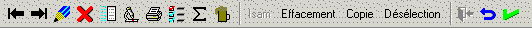

Une barre d’outils est un ensemble de boutons représentant certaines options ou groupes d’options proposés par un programme. Ces boutons (textes et/ou graphiques) sont affichés dans une barre horizontale placée en haut de la fenêtre courante (en dessous du menu).
Exemple :

Remarques :
Une même fenêtre peut afficher plusieurs barres d’outils simultanément.
Certains paramètres des objets bouton des masques d’écran n’existent plus pour les boutons de barre d’outils. En particulier, la notion de portée (les boutons de barre d’outils sont toujours « globaux ») et de bouton « en saisie » (les boutons de barre d’outils ne peuvent pas être inclus dans l’ordre de saisie). De plus, les boutons de barre d’outils n’ont pas de donnée de contrôle et ne portent pas de noms d'objet (les modifications dynamiques d’attributs s’obtiennent par des fonctions Diva spécifiques).